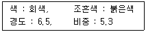
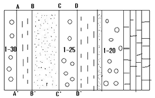
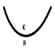
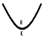
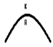
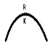

응용지질기사 (2009-07-26 기출문제)
1과목: 암석학 및 광물학
1. 다음 중 오피(ophiolite)의 구성암이 아닌 것은?
- 현무암
- 감람암
- 반려암
- 유문암
(정답률: 55%)

2. 퇴적암에 발달한 사층리로서 판단할 수 없는 것은?
- 퇴적물의 공급원(provenance)을 알 수 있다.
- 지층이 퇴적할 당시의 유수의 방향을 알 수 있다.
- 퇴적물의 근원암을 판단할 수 있다.
- 지층의 역전 여부를 판단할 수 있다.
(정답률: 77%)
3. 저반과 저반사이에 관입당한 오래된 암석이 뾰족한 쐐기 모양으로 꽂혀 있는 부분을 무엇이라 하는가?
- 암맥(Dyke)
- 암경(Neck)
- 현수체(Roof pendant)
- 아스피테(Aspite)
(정답률: 알수없음)
4. 다음 변성암에서 발견되는 광물들 중에서 변성도가 가장 높은 환경을 지시하는 광물은?
- 흑운모
- 규선석
- 석류석
- 녹니석
(정답률: 93%)
5. 다음 중 석회암을 구성하는 알로켐(allochem) 성분에 해당하지 않는 것은?
- 어란석
- 화석편
- 석회질 암편
- 미크라이트(micrite)
(정답률: 65%)
6. 다음 변성암 중 단층의 작용에 의한 파쇄변성작용으로 형성된 것이 아닌 것은?
- 압쇄암(mylonite)
- 슈도타킬라이트(pseudotachylite)
- 안구상 편마암(augen gneiss)
- 호상 편마암(banded gneiss)
(정답률: 82%)
7. 다음 중 현무암질 암석이 높은 온도와 압력의 영향을 받아 생성되는 변성암은?
- 각섬암
- 감람암
- 천매암
- 압쇄암
(정답률: 알수없음)
8. 다음 중 점성이 가장 큰 마그마(magma)에서 형성된 암석은?
- 유문암(rhyolite)
- 조면암(trachyte)
- 안산암(andesite)
- 현무암(basalt)
(정답률: 90%)
9. 고온으로부터 저온으로 변화하는 Bowen의 반응 계열이 맞게 나열된 것은?
- 마그네슘 감람석 → 마그네슘 휘석 → 칼슘-마그네슘 휘석 → 각섬석 → 흑운모
- 마그네슘 감람석 → 마그네슘 휘석 → 칼슘-마그네슘 휘석 → 흑운모 → 각섬석
- 마그네슘 감람석 → 칼슘-마그네슘 휘석 → 마그네슘 휘석 → 각섬석 → 흑운모
- 마그네슘 감람석 → 칼슘-마그네슘 휘석 → 마그네슘 휘석 → 흑운모 → 각섬석
(정답률: 60%)
10. 셰일과 이암의 차이를 가장 잘 나타낸 것은?
- 석영의 함량
- 화석의 유무
- 암석의 색깔
- 박리성의 유무
(정답률: 90%)
11. 광물감정에 이용되는 미네랄라이트(mineralight)의 설명으로 맞는 것은?
- 적외선에 의한 광물의 인광색 식별
- 자외선에 의한 광물의 형광색 식별
- 음극선에 의한 광물의 인광색 식별
- X선에 의한 광물의 형광색 식별
(정답률: 90%)
12. 다음 광물 중 준장석(feldspathoid) 그룹에 속하지 않는 것은?
- 류사이트(leucite)
- 네펠린(nepheline)
- 소달라이트(sodalite)
- 제올라이트(zeolite)
(정답률: 알수없음)
13. 주상(columnar) 형태로 산출되는 대표적인 광물이 아닌 것은?
- 녹주석
- 전기석
- 휘안석
- 흑운모
(정답률: 58%)
14. 빛의 세기가 같고 진동방향이 서로 직각인 두 편광이 합성되었을 때 나타나는 현상은?
- 빛의 증폭 현상
- 빛의 소광 현상
- 빛의 회절 현상
- 빛의 직진 현상
(정답률: 알수없음)
15. 다음 중 동질이상의 예가 아닌 것은?
- 크리스토발라이트와 코에사이트
- 황철석과 백철석
- 규선석과 홍주석
- 방해석과 능철석
(정답률: 알수없음)
16. 광물 등의 원자결합방식과 특성과의 관계에 대한 설명 중 옳지 않은 것은?
- 공유결합을 하고 있는 광물들은 대체로 용해가 잘 되지 않고, 대단히 높은 용융점과 비등점을 가지고 있다.
- 금속결합을 하고 있는 광물들은 전기와 열에 대한 높은 전도성을 가진다.
- 광물 중에서 이온결합의 좋은 예는 소금과 형석에서 찾아볼 수 있다.
- 유기탄소화합물에서 분자내의 결합은 잔류결합이고, 분자간에는 공유결합으로 되어 있다.
(정답률: 알수없음)
17. 결정격자의 기본이 되는 최소단위의 입체격자를 무엇이라 하는가?
- 공간격자
- 단위포
- 대칭요소
- 결정면
(정답률: 70%)
18. 다음 광물 중에서 완전 고용체를 이루는 것은?
- 자황철석
- 감람석
- 석영
- 형석
(정답률: 알수없음)
19. 다음과 같은 물리적 성질을 가진 광물은?

- 자철석
- 침철석
- 적철석
- 티탄철석
(정답률: 80%)
20. 산소원자의 원자량은 16, 칼슘원자의 원자량은 40, 탄소 원자의 원자량은 12 이다. 방해석의 화학식량은?
- 88
- 100
- 104
- 112
(정답률: 94%)
2과목: 구조지질학
21. 다음은 단층작용에 의해 형성된 구조이다. 그림에서 단층일 가능성이 가장 큰 것은?

- A - A'
- B - B'
- C - C'
- D - D'
(정답률: 50%)
22. Isopach map은 석유탐사 등에서 많이 이용되고 있다. 이는 다음 어느 것을 표시한 도면인가?
- 지층의 두께
- 지층의 암상
- 지하에 있는 습곡
- 동일화석의 분포
(정답률: 64%)
23. 대양저 산맥(ocean ridges)에 대한 설명 중 틀린 것은?
- 열곡이 발달한다.
- 높은 열류량을 나타낸다.
- 수직단층이 발달한다.
- 천발지진(30 km 내외)이 자주 발생한다.
(정답률: 알수없음)
24. 지질시대를 구분하는데 가장 중요하게 취급되는 지질구조는?
- 단층
- 부정합
- 습곡구조
- 절리
(정답률: 알수없음)
25. 하천의 발달 형태가 직선 또는 직각을 이루고 있는 부분이 있다. 이는 다음 중 어느 것의 영향을 받아 형성된 것인가?
- 돔(dome) 구조
- 저반(batholith)
- 주향이동단층(strike-slip fault)
- 화산함몰체(cauldron)
(정답률: 86%)
26. 과거에 호수였던 미고결 지층을 굴착하던 중에 식물파편을 발견하였다. 이의 매몰 연대를 측정하는 데 사용되는 방사성동위원소로서 가장 적합한 것은?
- 우라늄 - 납
- 탄소
- 칼륨 - 아르곤
- 루비듐 - 스트론튬
(정답률: 85%)
27. 리히터 규모 스케일에서 규모 7의 지진은 규모 5의 지진보다 얼마나 더 많은 에너지를 방출하는가?
- 2배
- 100배
- 200배
- 900배
(정답률: 86%)
28. 최소응력방향에 대하여 직각방향으로만 형성되는 지질구조는?
- 주향이동단층(strike-slip fault)
- 역단층(reverse fault)
- 인장절리(extensional joint)
- 전단절리(shear joint)
(정답률: 알수없음)
29. 모어응력원(Mohr stress circle)에서 응력원의 반경은 무엇을 의미하는가?
- 평균응력(mean stress)
- 역단층(deviatoric stress)
- 차응력(differential stress)
- 축응력(axial stress)
(정답률: 0%)
30. 지진파 연구로 알려진 지각 아래의 맨틀(mantle)의 두께는 약 얼마인가?
- 1190 km
- 2280 km
- 2900 km
- 3100 km
(정답률: 73%)
31. 다음 중 지층의 역전여부를 판단할 수 있는 단서가 될 수 없는 것은?
- 베개용암(Pillow lava)
- 주상절리(columnar joint)
- 점이층리(graded bedding)
- 사층리(cross bedding)
(정답률: 80%)
32. 홍해(Red Sea)가 해당되는 대륙 경계의 유형은?
- 발산형 대륙 경계
- 섭입형 대륙 경계
- 변환단층형의 경계
- 충돌형 대륙 경계
(정답률: 알수없음)
33. 요굴 습곡(flexural fold)에 대한 설명으로 틀린 것은?
- 요굴 습곡은 평행 습곡의 모양을 이루며, 습곡된 각 지층의 길이와 두께에는 변화가 없다.
- 요굴 습곡 구조는 층리면과 층리면 사이에서 변위가 발생하기 때문에 습곡축에 대하여 수직 방향으로 층리면 위에 단층 조선이 형성된다.
- 암상이 서로 교호하는 암석 내에서는 요굴슬립 습곡이 흔히 형성된다.
- 요굴 유동 습곡은 습곡 축면 벽개(axial plane cleavage)에 평행한 단순 전단력의 영향을 받는다.
(정답률: 46%)
34. 모나드녹크(monadnock)에 대한 설명으로 틀린 것은?
- 침식윤회 모델에 의하면 노년기 지형에 속한다
- 이 시기에는 하곡의 폭이 확대되며 하곡 양측 사면 경사도가 완만해 진다.
- 호주 중앙부의 Ayers Rock이 대표적인 예이다.
- 준평원기 바로 전에 발달하는 지형이다.
(정답률: 30%)
35. 우리나라에서 지진 위험도가 상대적으로 크다고 알려진 지체 구조구는 어디인가?
- 함북습곡대
- 평남분지
- 소백산육괴
- 경상분지
(정답률: 50%)
36. 다음 중 취성전단대에 나타나는 특징이 아닌 것은?
- 단층각력(fault breccia)
- 단층가우지(fault gouge)
- 조선(striation)
- 화산력(lapilli)
(정답률: 알수없음)
37. 사면 경사방향과 반대방향의 급경사 절리와 단층에 의해 발생할 수 있는 사면붕괴의 형태는?
- 원호파괴(circular failure)
- 평면파괴(plane failure)
- 쐐기파괴(wedge failure)
- 전도파괴(toppling failure)
(정답률: 37%)
38. 다음 그림에서 배사형 향사(antiformal syncline) 구조는 어느 것인가? (단, K : 신기지층 → R : 고기지층)




(정답률: 64%)
39. 다음 중 시층서 단위와 지질시대 단위의 연결이 잘못된 것은?
- 누대층(Eonothem) - 누대(Eon)
- 대층(Erathem) - 세(Epoch)
- 계(System) - 기(Period)
- 조(Stage) - 절(Age)
(정답률: 73%)
40. 단위중량이 2,500 kg/m3, 포아송비가 0.25인 암석에 2 km 심도에서 중력으로 인한 수직하중으로 유도된 수평 응력은 얼마인가? (단, 중력가속도 : 10 m/sec2)
- 50 Mpa
- 25 Mpa
- 16.7 Mpa
- 12.5 Mpa
(정답률: 28%)
3과목: 탐사공학
41. 웨너(Wenner) 전극 배열법을 이용한 전기 비저항 탐사에 있어서 전위전극의 간격 10m, 입력전류 1[A], 측정 전위 1[V]일 때 겉보기 비저항은 얼마인가?
- 12.5 Ω-m
- 31.4 Ω-m
- 62.8 Ω-m
- 125.6 Ω-m
(정답률: 알수없음)
42. 지중의 수소이온농도와 관련된 물리탐사방법은?
- 중력탐사
- 전기비저항탐사
- 자연전위탐사
- 유도분극탐사
(정답률: 64%)
43. 탄성파가 전파될 때 구형 파면은 새로운 2차 파면을 형성하면서 계속 전파해 간다. 이런 현상과 관련된 원리 또는 법칙은 무엇인가?
- 페르마의 원리
- 호이겐스의 원리
- 스넬의 법칙
- 데카르트 법칙
(정답률: 77%)
44. 화성암이 고온 상태에서 식으면서 얻는 잔류자기는 암석의 어떤 영구자화 방식으로 주로 형성되는가?
- 등온 잔류자화
- 열 잔류자화
- 점성 잔류자화
- 화학 잔류자화
(정답률: 72%)
45. 다음 중 지열 탐사에 이용되는 물리적 현상에 대한 설명으로 옳은 것은?
- 뜨거운 상태의 암석의 전기비저항은 매우 높다
- Curie점이상의 온도에서 암석은 잃었던 자성을 얻게 된다.
- 뜨거운 상태의 암석은 P파의 속도가 증가한다.
- 뜨거운 상태의 암석은 S파의 진폭이 감소한다.
(정답률: 58%)
46. 지하 매질의 탄성파 횡파(S파)의 속도는 2,000 m/s 이고, 밀도가 2.6 g/cm3 일 때 강성율(rigidity modulus)은?
- 2.6 × 109 N/m2
- 2.6 × 1012 N/m2
- 10.4 × 109 N/m2
- 10.4 × 1012 N/m2
(정답률: 알수없음)
47. Goldschmidt의 지구화학적 원소의 분류에서 리튬(Li), 바나듐(V), 텅스텐(W), 불소(F) 등은 다음 중 어느 것에 해당하는가?
- 친철 원소(siderophile element)
- 친동 원소(chalcophile element)
- 친기 원소(atmophile element)
- 친석 원소(lithophile element)
(정답률: 알수없음)
48. 중력 탐사에서 지질구조에 따른 중력 이상에 대한 설명 중 틀린 것은?
- 화강암체나 암염돔 구조는 음의 중력 이상을 나타낸다.
- 열곡대에서는 매우 큰 음의 중력 이상이 나타난다.
- 해안, 해령 및 해구 등으로 이루어진 해양 구조에서 부게 이상은 지각평형에 의한 보상작용 때문에 해령의 정상부에서 최소가 된다.
- 일반적으로 부게 이상의 대규모적인 변화는 지표 근처에 존재하는 소규모의 이상밀도를 갖는 질량체에 기인된다.
(정답률: 28%)
49. 육성 탄성파 탐사의 음원으로서 적당하지 않은 것은?
- 다이나마이트(Dynamite)
- 웨이트 드롭(Weight drop)
- 바이브로사이스(Vibroseis)
- 스파커(Sparker)
(정답률: 44%)
50. 전기비저항 검층법 중 송신전류를 수평방향으로 흘려보내 인접지층의 영향을 최소화하고 조사 심도를 향상시킨 방법은?
- 단노말 전기비저항 검층
- 레터럴 전기비저항 검층
- 마이크로 전기비저항 검층
- 지향식 전기비저항 검층
(정답률: 72%)
51. 지하투과 레아다 탐사법(GPR)에서 레이다파의 반사계수에 가장 큰 영향을 미치는 것은?
- 전기전도도
- 유전율
- 투자율
- 대자율
(정답률: 알수없음)
52. 화학원소의 1차분산에 의한 이상대를 찾기 위한 지구화학 탐사의 대상 시료는?
- 토양
- 암석
- 식물
- 지하수
(정답률: 67%)
53. 탄성파 탐사시 수심이 얕은 수중에서 짧은 시간 간격으로 여러 번 나타나는 다중 반사파를 무엇이라 하는가?
- 고스트(Ghost)
- 페그레그(Peg-Leg)
- 반향파(Reverberation)
- 인터베드(Inter-Bed)
(정답률: 37%)
54. 기본적인 야외 자력탐사에 관한 설명으로 맞는 것은?
- 자력탐사기를 사용할 EO 센서를 지면으로부터 1 m 이내로 접근시켜야 한다.
- 아주 국지적인 탐사를 제외하고는 위치보정을 할 필요가 없다.
- 중력탐사에서 계기변화나 조석변화를 보정 하지만 자력 탐사의 측정값은 일변화 보정을 하지 않는다.
- 자력탐사에서는 측정간의 고도차를 보정하지 않는 것이 보통이다.
(정답률: 47%)
55. 반사법 탄성파 탐사를 이용하여 얻은 자료에서 지표하부의 경사면에 의해 발생하는 겉보기 반사점(apparent reflecting point)를 실제의 위치로 이동시키거나 회절파를 없앨 목적으로 실시하는 자료처리의 과정은?
- 구조보정(migration)
- 정보정(static correction)
- 공심점 모음 중합(CDP gather stack)
- 수직경로시차 보정(normal move out correction)
(정답률: 50%)
56. 지하투과 레이다 탐사법(GPR)에서 500 MHz 안터나의 펄스 주기는 얼마인가?
- 1 s
- 1ms
- 2 ns
- 2 ms
(정답률: 60%)
57. 지하에 전도성 이상체가 존재할 경우 지하매질을 전파하는 전자기파의 자기장에 의해 이상체 내에 발생되는 전류는?
- 지전류(telluric current)
- 직류전류(direct current)
- 유도전류(eddy current)
- 교류전류(alternative current)
(정답률: 알수없음)
58. 지시원소(Pathfinder)에 대한 설명 중 틀린 것은?
- 일반적으로 광체내에 함유되어 있는 경제적 개발가치가 있거나 광체내 주성분 원소와 관계가 있는 원소를 말한다.
- 지구화학탐사에서 광체를 발견하기 위해 분석 대상이 되는 원소를 말한다.
- 지시원소는 화학분석이 용이하고 분석비가 싸야 한다.
- 지구화학적 환경에서 이동도가 작고 탐사대상 광체와 지질학적으로 관련성이 있어야 한다.
(정답률: 83%)
59. 중력탐사자료의 처리와 관련하여 광역이상이 우세한 지역에서 소규모 이상을 효과적으로 추출하기 적당한 방법은?
- 상향연속법
- 2차미분법
- 장파장 통과 필터링
- 이동평균법
(정답률: 60%)
60. 1층의 탄성파 속도가 1000m/s 이고 2층의 탄성파 속도가 2000m/s 인 깊이 100m의 수평 경계면에 대한 임계굴절파는 에너지원에서 약 얼마 떨어진 곳에서 처음으로 접하는가?
- 50.1 m
- 88.9 m
- 100.4 m
- 115.5 m
(정답률: 50%)
4과목: 지질공학
61. 지형의 특성에 따라 충적층을 다음과 같이 구분할 때 일반적으로 충적층의 두께가 가장 두꺼운 지층은?
- 선상지
- 해안평야
- 범람원
- 곡간평야
(정답률: 85%)
62. 지하수위가 높은 점성질 세립사층에 표준관입시험을 실시하였다. 이 때 N 값이 31 이었다. 이를 보정하면 그 보정치 N 은 얼마인가?
- 31
- 28
- 26
- 23
(정답률: 알수없음)
63. 암석의 탄성파 속도에 영향을 미치는 요소에 대한 설명으로 틀린 것은?
- 밀도가 클수록 전파속도가 증가한다.
- 공극률이 증가하면 전파속도는 저하한다.
- 층상 암석에서 층에 평행한 방향의 전파속도가 수직방향의 속도보다 크게 나타난다.
- 암석에 작용하는 구속응력이 증가할수록 전파 속도는 감소한다.
(정답률: 9%)
64. NATM 터널시공시 터널의 단면, 폭 변화 등을측정하는 계측은?
- 갱내관찰조사
- 천단침하계측
- 내공변위계측
- 록볼트 인발시험
(정답률: 70%)
65. 화강암에서 기계적 풍화가 발생하기 위한 조건으로 적당하지 않은 것은?
- 겨울에 온도가 영화로 떨어진다.
- 밤, 낮의 온도차가 크다.
- 비가 자주 내린다.
- 응력해방에 따라 절리 발달이 촉진된다.
(정답률: 80%)
66. 주향 N30˚ E, 경사 50˚ SE 인 절리의 방향을 경사/경사방향으로 올바르게 표시한 것은?
- 50˚ / 120˚
- 50˚ / 30˚
- 50˚ / 300˚
- 30˚ / 50˚
(정답률: 36%)
67. 다음 지반개량공법 중 화학적 개량공법이 아닌 것은?
- 페이퍼드레인공법
- 생석회말뚝공법
- 심층혼합공법
- 약액주입공법
(정답률: 알수없음)
68. 지표면에 2MN의 집중하중이 작용하고 있다. 작용점 바로 밑으로 10m 떨어진 지점에 발생하는 연직응력 증가량은 약 얼마인가?
- 8.6 kPa
- 9.6 kPa
- 10.6 kPa
- 11.6 kPa
(정답률: 25%)
69. 국제암반역학회(ISRM)는 개략적인 체적절리계수와 RQD의 관계를 제시하였다. 체적절리계수가 20개/m3 일 때 RQD는 얼마인가?
- 76 %
- 62 %
- 49 %
- 33 %
(정답률: 알수없음)
70. 유선망에 대한 설명으로 틀린 것은?
- 등수두선과 유선은 항상 직각이다.
- 인접한 두 유선 사이를 흐르는 유량은 일정하다.
- 유선 사이의 거리가 넓어지면 유속이 빨라진다.
- 인접한 두 등수두선 사이의 수두손실은 동일하다.
(정답률: 83%)
71. 모래로 채워진 튜브를 이용한 유체통과 실험을 통하여 Darcy의 법칙을 설명할 때, 다음 중 틀린 것은?
- 튜브를 통과한 물의 양은 튜브의 단면적에 비례한다.
- 튜브를 통과한 물의 양은 튜브 양끝의 수두차에 비례한다.
- 튜브를 통과한 물의 양은 튜브의 길이에 비례한다.
- 튜브에 모래대신 투수성이 매우 낮은 점성토로 채워졌다면 Darcy의 법칙을 적용할 수 없다.
(정답률: 70%)
72. 다음 중 암석 시험편에 대한 일축압축강도 시험에서 압축 강도에 영향을 주는 요인으로 가장 거리가 먼 것은?
- 시험편의 화학성분
- 시험편의 크기
- 가압속도
- 시험편의 형상
(정답률: 58%)
73. 화강암에서 지표의 압력이 제거될 때 주로 나타나는 절리 형태는?
- 공액절리
- 전단절리
- 수직절리
- 층상절리
(정답률: 알수없음)
74. 투수성이 큰 지층 내에 불투수층이 렌즈상으로 부분적으로 존재하여, 그 상부에 지하수가 저류되는 소규모의 대수층을 무엇이라 하는가?
- 비대수층(aquifuge)
- 준대수층(aquitard)
- 주수대수층(perched aquifer)
- 난대수층(aquiclude)
(정답률: 62%)
75. 불연속면 등과 같은 지질구조의 지배를 받는 암반사면에 대한 해석법으로 적절하지 않은 것은?
- 절편법
- 벡터해석법
- 스테레오 투영법
- 블럭이론 해석법
(정답률: 30%)
76. 다음 중 RMR 분류법과 Q 분류법에서 동시에 고려되는 항목은?
- 불연속면군의 수
- RQD
- 응력조건
- 암석의 일축압축강도
(정답률: 90%)
77. 다음 중 불교란 시료를 채취하기 위해 사용되는 샘플러가 아닌 것은?
- 고정 피스톤식 샘플러(stationary piston sampler)
- 데니슨형 샘플러(denison sampler)
- 포일 샘플러(foil sampler)
- 스플릿 스푼 샘플러(split spoon sampler)
(정답률: 50%)
78. 암반 블록들의 맞물린 상태와 절리상태를 바탕으로 암반의 강도를 추정하기 위해 제안된 지수로 Hoek-Brown의 파괴기준식에서도 활용되는 것은?
- GSI(geological strength index)
- SRF(stress reduction factor)
- SMR(slope mass rating)
- ESR(excavation support ratio)
(정답률: 알수없음)
79. 포화대의 수리지질학적 특성은 지하수의 흐름 특성과 저유특성으로 구분할 수 있다. 다음 중 저유특성에 영향을 미치는 요인이 아닌 것은?
- 공극률
- 비저유계수
- 투수량계수
- 비산출률
(정답률: 79%)
80. 어떤 시료 흙에 대하여 직접전단시험을 실시하였다. 전단 강도는 0.8 kg/cm2, 수직응력은 0.4kg/cm2, 내부마찰각은 45˚일 때 점착력은 얼마인가?
- 0.4 kg/cm2
- 4 kg/cm2
- 0.2 kg/cm2
- 2 kg/cm2
(정답률: 60%)
5과목: 광상학
81. 화강암 중의 장석, 운모, 각섬석 등이 광화가스의 교대작용으로 리티아 운모(lithia mica)로 변화하고 동시에 소량의 황옥, 형석, 석석 등이 생기며 또한 새로운 석영이 다량 생기게 하는 작용은?
- 규화작용
- 프로필라이트화 작용
- 그라이젠화 작용
- 리티아 운모화 작용
(정답률: 80%)
82. 호주의 Bendigo 금광상은 어떤 광맥으로 유명한가?
- 망상광맥
- 제상광맥
- 안상광맥
- 각력충진광맥
(정답률: 37%)
83. 다음 중 대표적인 스카른 광물이 아닌 것은?
- 석류석
- 규회석
- 방해석
- 투휘석
(정답률: 77%)
84. 석회석은 시멘트 원료, 건축재 등 매우 광범위한 용도로 활용되고 있다. 다음 중 석회석 광상이 주로 분포하는 지층은 어느 것인가?
- 제상계
- 경상계
- 대동계
- 조선계
(정답률: 58%)
85. 다음 중 동생(syngenetic)광상은?
- 마그마 분결광상(magmatic segregation deposits)
- 제노서멀 광상(xenothermal deposits)
- 반암 동 광상(porphyry copper deposits)
- 잔류광상(residual deposits)
(정답률: 65%)
86. 광상에서 광물생성의 시간적 순서를 의미하는 용어는?
- 광물공생관계
- 광물대상분포
- 광물상관계
- 표준광물조합
(정답률: 86%)
87. 다음 중 고령토광상이 형성되는 지질현상과 가장 관계없는 것은?
- 풍화작용
- 열수변질작용
- 변성작용
- 퇴적작용
(정답률: 62%)
88. 다음은 우리나라 금광상에 대한 설명으로 옳은 것은?
- 우리나라에는 사금광상이 없다.
- 중생대 화강암류와 성인적인 관련성이 크다.
- 에렉트럼은 우리나라에서는 산출되지 않는 금-은 광물이다.
- 우리나라 금광상에서는 모암의 변질이 일어나지 않았다.
(정답률: 80%)
89. 광상 형성의 진행 과정에 따라 정마그마 광상을 구분할 때 속하지 않는 것은?
- 분결분산광상
- 분결분화광상
- 불혼합액농집광상
- 분결농집광상
(정답률: 57%)
90. 반암 동 광상(porphyry copper deposits)의 변질대 중 일반적으로 가장 중심부에 발달하는 변질대에 해당하는 것은?
- 칼륨(potassic) 변질대
- 필릭(phyllic) 변질대
- 프로필라이트(prophylitic) 변질대
- 견운모(sericitic) 변질대
(정답률: 43%)
91. 다음 중 반암형 몰리브덴 광상(porphyry Mo deposits) 탐사 시 가장 관련성 있는 관계화성암류는?
- 안산암류
- 현무암류
- 섬록암류
- 화강암류
(정답률: 37%)
92. 다음 중 페그마타이트 광상에서 산출되는 광물은?
- 펜틀란다이트
- 스페리라이트
- 베릴륨
- 황동석
(정답률: 54%)
93. 반암동형 광상 형성 후 융기, 침식작용 등에 의해 주변의 황철석대가 풍화작용을 받아 하강하는 산성수에 의해 동광물이 분해, 용출되어 지하수면 보다 하위의 용존산소가 존재하지 않는 장소에서 재침전되어 부광대를 형성하는 작용을 무엇이라 하는가?
- 용탈작용
- 2차 부화작용
- 점토변질작용
- 재광화작용
(정답률: 91%)
94. 우리나라 광상 성인의 유형으로 볼 때 각력 파이프(breccia pipe) 형의 광상으로 알려진 것은?
- 달성광상
- 포천광상
- 신예미광상
- 울산광상
(정답률: 85%)
95. 페그마타이트 광상(pegmatite deposits)의 산출 특성은?
- 층상구조
- 대상구조
- 교대구조
- 충식구조
(정답률: 43%)
96. 호상철광층에 대한 설명 중 틀린 것은?
- 산출상태에 따라 알고마형과 슈페리오형으로 대분된다.
- 알고마형은 슈페리오형보다 규모가 작다.
- 슈페리오형은 알고마형에 비해 일반적으로 산화물상이 우세하다.
- 알고마형은 화학적 퇴적암류에서 산출되다.
(정답률: 50%)
97. 기성광상에 대한 설명 중 틀린 것은?
- 마그마내 증기압이 가장 커지는 시기에 만들어진 광상이다.
- 녹니석화 작용이 잘 나타난다.
- 석회암을 모암으로 하면 스카른이 형성된다.
- 휘수연석, 철망간중석 등이 주요 광석광물이다
(정답률: 알수없음)
98. 광상의 생성온도를 측정하는데 사용하는 것을 지질온도계라고 부른다. 다음 중 지질온도계로 이용되는 것이 아닌 것은?
- 유체포유물
- 용리현상
- 용융점
- 반감기
(정답률: 79%)
99. 세계적으로 널리 알려진 상동 중석광상에 대한 설명으로 틀린 것은?
- 상동광상은 대규모 스카른형 중석·휘수연석 광상이다.
- 주요 광석광물은 회중석, 포웰라이트, 철망 간중석, 휘수연석 등이다.
- 모암은 풍촌석회암 및 묘봉층에 협재된 석회암이다.
- 맥석광물은 대부분이 황화광물이다.
(정답률: 64%)
100. 마그마수의 조성(성분)에 영향을 미치는 주요 요소가 아닌 것은?
- 모암과의 반응
- 마그마의 형태와 정출과정
- 마그마에서 분리되는 과정과 이후의 온도, 압력
- 마그마수가 이동할 때 혼합되었을 광화가스의 종류
(정답률: 알수없음)